我的神
首先，感謝我的高中同學傑瑞。這一路上的打氣支持互相幫忙真的很感謝，從當年一起去同一間試場考學測，到後來討論到debug，再到考研究所。即使再來在不同城市，但相信你一定可以面對未來的挑戰並能迎刃而解的，未來的路上你也能順利，跟大嫂長長久久，年薪百萬，績效大爆射。
強者我同學，正取交大
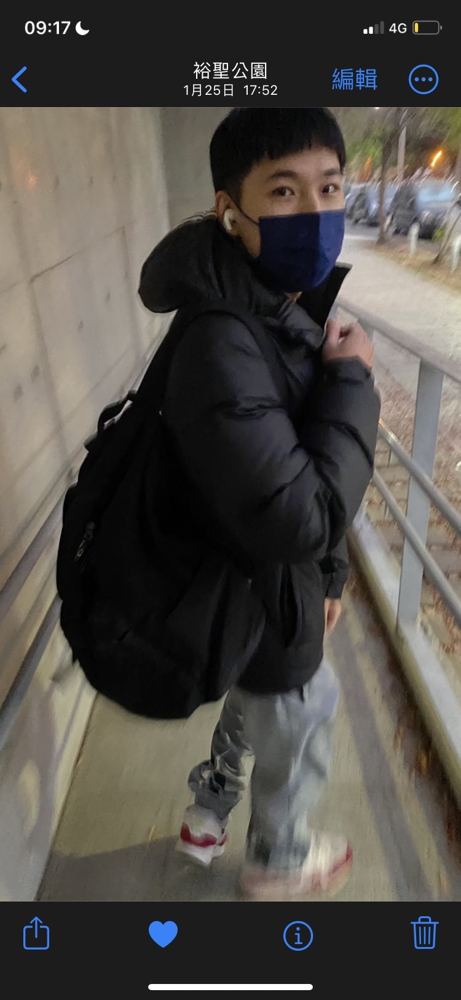
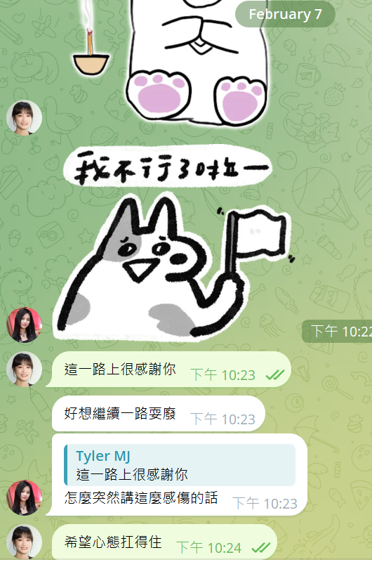
那天考前跟彼此說要上交
每一位戰友們
感謝dc上的一群大神，J大 水源誠哥 東8 SayA nana姊 元元 習大大 fun姊 白癡競賽專題大大 bucha大 則哥 justinwu 4427 xiayu 雅羽 學妹 族繁不及備載
感謝tg的peter哥 s大、LINE群的鯊大 山大
大學同學與高中同學
感謝大學同學 魚仔 清大妹妹的男友 帥哥主人的男友 火的孩子 多米粉絲 福格先生 David Tim
感謝高中同學 不管是要讀研/出國/當兵都好好加油 祝咱們未來 感情、事業、健康都能夠順利
家人與自己
感謝我的媽跟哥能夠這樣義無反顧地支持我重考
最後要感謝自己，竟然能夠半年只看一部電影。我愛王淨❤️
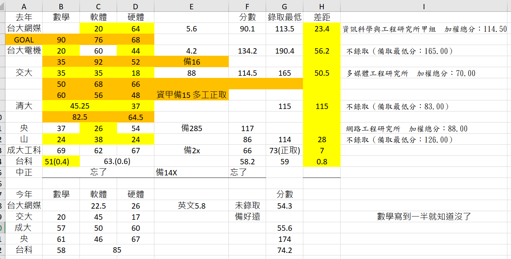
祝大家研究所及未來的路上都快快樂樂、順順利利的
Others
感謝謝孟恭主委 散步三花 博恩 台通🦐 曼報 好味小姐 miula 新資料夾的podcast陪伴
以及南希肯恩 守夜人 周董 意公子 蔣勳老師的心靈救贖
感謝圖書館各種形形色色的人
謝謝老師的教導，從老師身上學到很多事情，不論是學科方面的還是關於未來的人生態度以及數也數不完的茶餘飯後的八卦。也對於老師自己所說的即使只有三個學生來上課依舊當作是千軍萬馬來教書，老師有著如此的教學熱忱真的很值得我們學習。老師也總是自己說自己沒有料是個爛貨製造機，但在我心目中以及許多學生的眼裡，老師一直以來都是個教學認真也幽默的師長。也謝謝老師不論無時無刻都願意讓學生去找您問問題，真的鮮少在大學期間遇到如此會教學還對學生如此關切的師長
 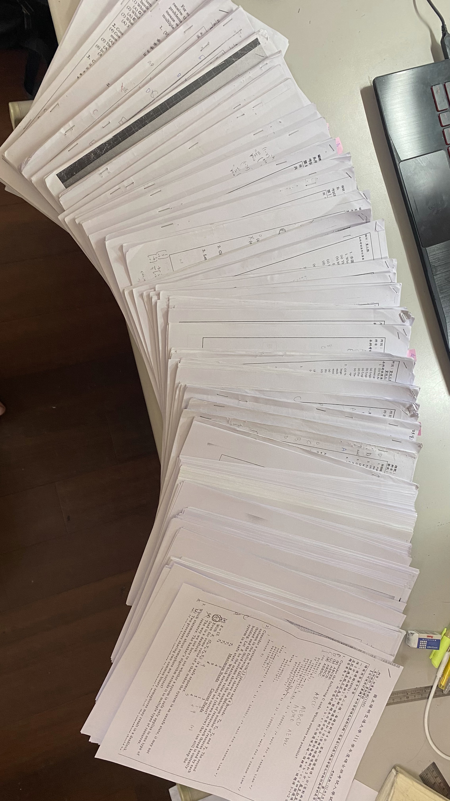
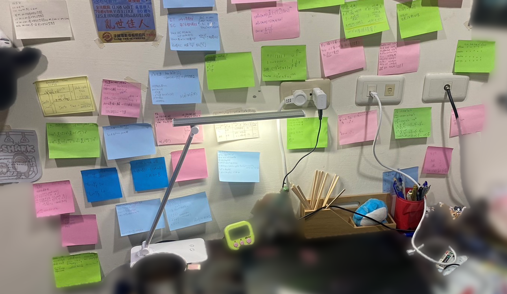
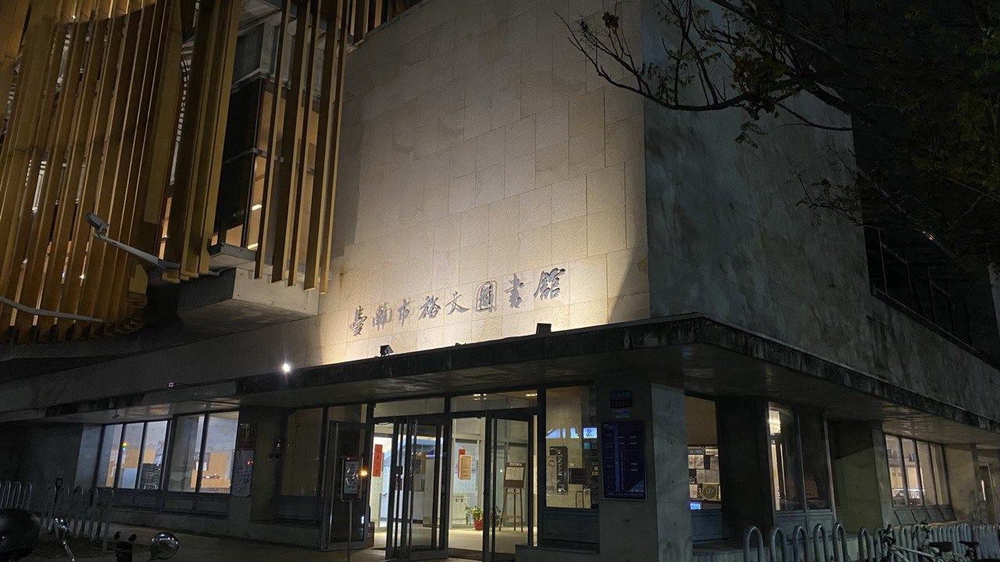
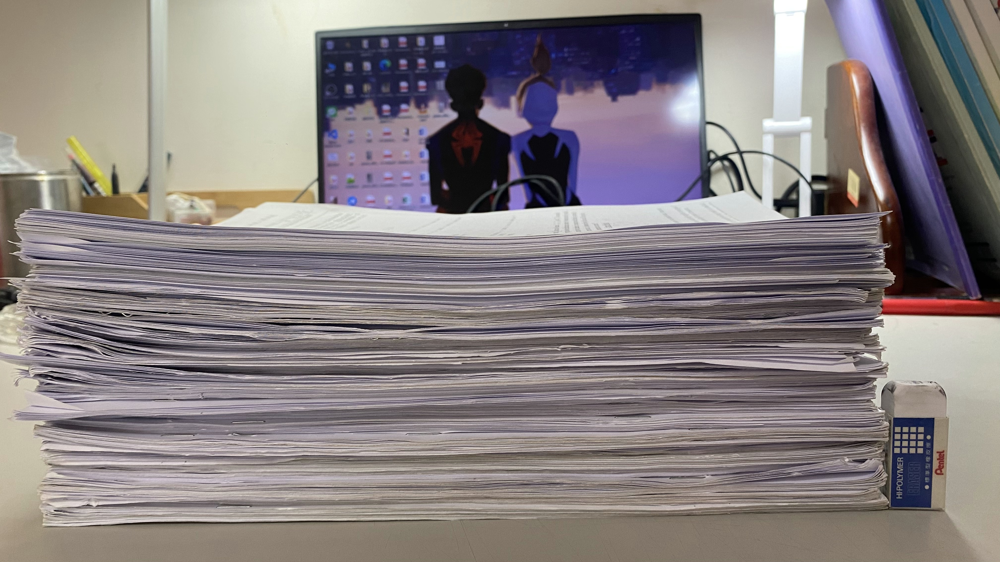
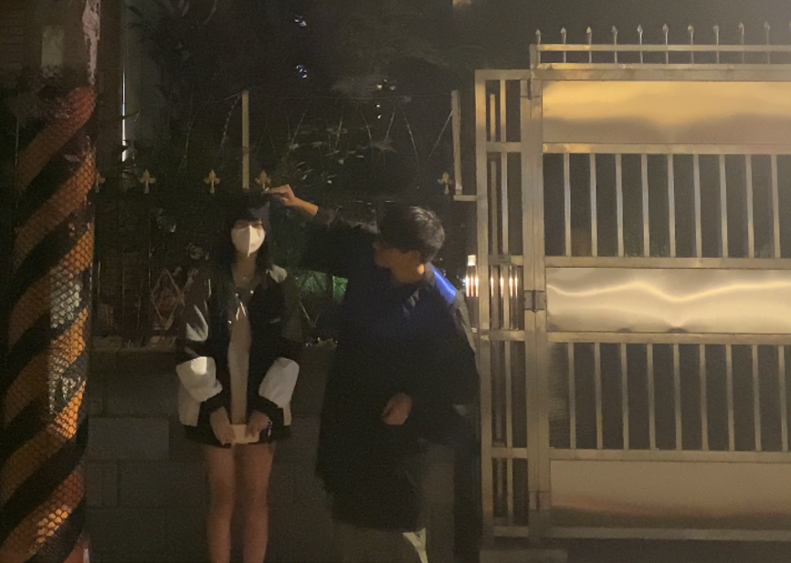
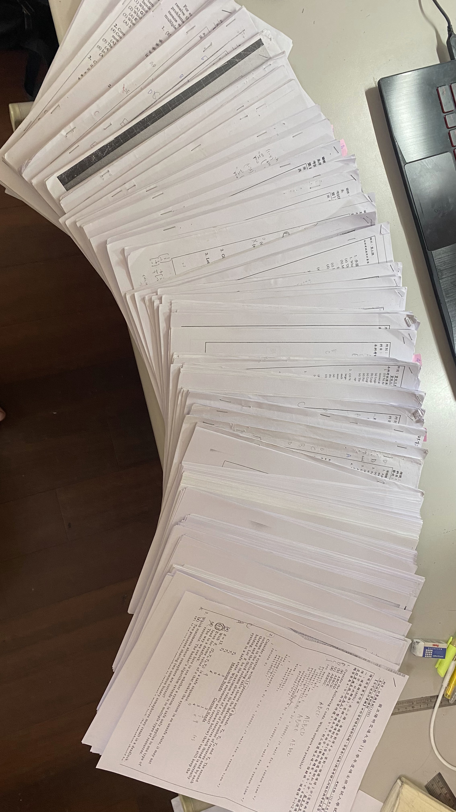
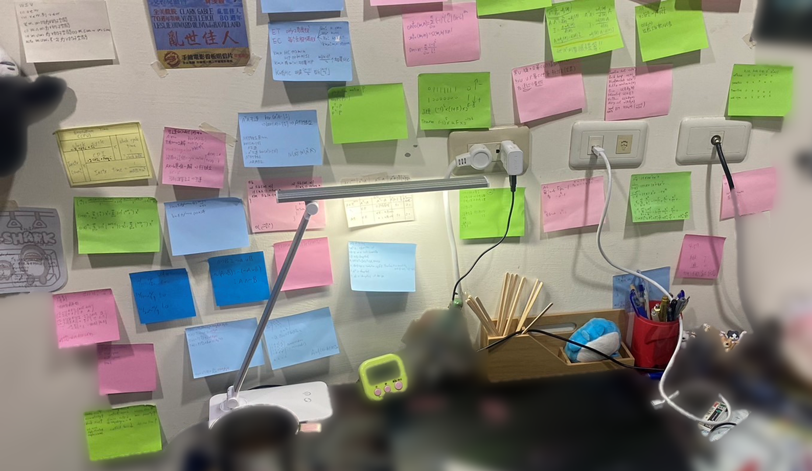
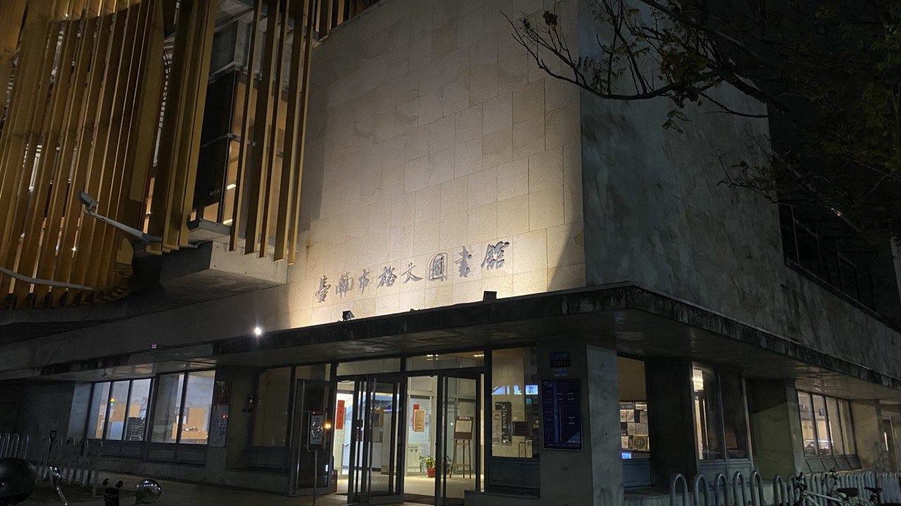
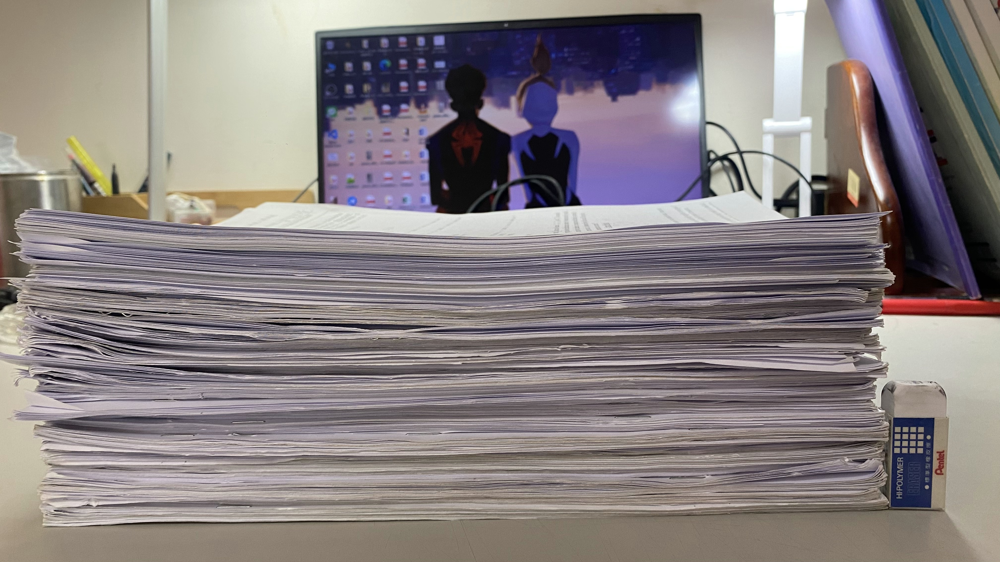
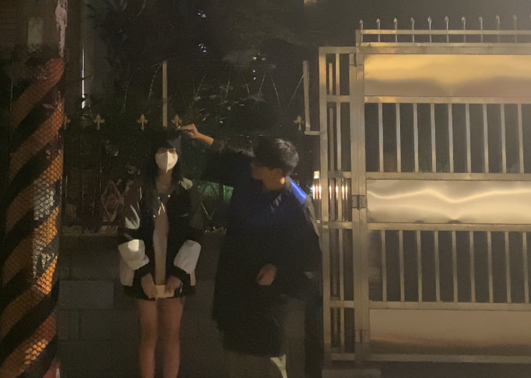